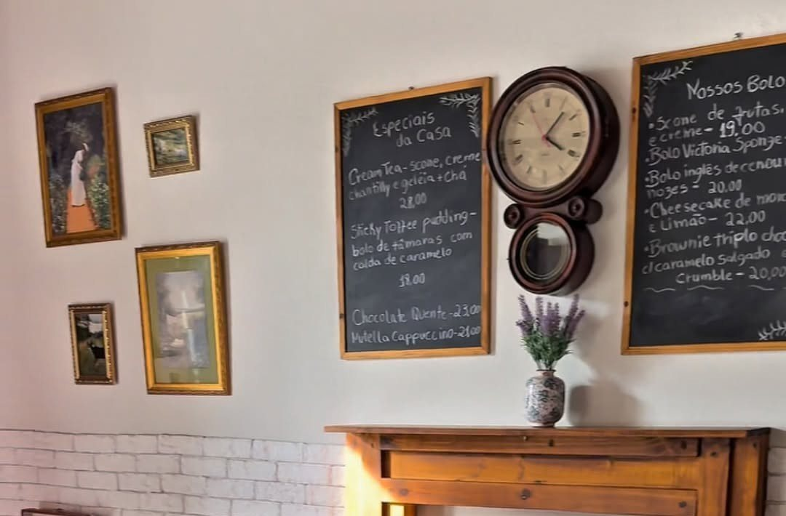

Início · Cardápio · Menu
Cardápio do Little England Café
44 itens com preço, das 7 artes publicadas pela casa: bolos, cafés, café da manhã, chás, sanduíches e bebidas, com os nomes em inglês. Toque em “+” para montar a sua mesa.
Extras
Adicionais publicados
Leite vegetal
Aveia com castanha · plant-based milk (oat with cashew nut): + R$ 3,50.
Extra de leite
Extra milk, nos chás: + R$ 2,00.
Cream cheese nos Ovos Reais
Adicione por + R$ 10,00.
Batatas fritas inglesas
No sanduíche, por + R$ 15,00.
Do quadro negro
Especiais e bolos do dia
As artes avisam: “Consulte nossos quadros negros para saber os Especiais da casa e bolos”. Em setembro, o especial foi o Sticky Toffee Pudding, “um bolo de tâmaras incrivelmente macio, servido com uma deliciosa calda de toffee caramelo (servidos quente)”.

Pré-pedido
Monte sua mesa
- Toque em “+”Escolha o chá, o scone, o café da manhã ou o sanduíche.
- Confira a listaA sacola soma os itens e mostra o total estimado.
- Mande o pré-pedidoA mensagem vai pronta para o WhatsApp da casa, (71) 99735-3220.
- A casa confirmaA equipe responde e confirma itens e mesa. O consumo é no salão.
Dúvidas frequentes
Perguntas comuns
Os preços estão atualizados?
São os das 7 artes da pasta do Drive, lidas em 03/10/2026. A casa não informa a data da versão; confirme no balcão ou pelo WhatsApp.
O pré-pedido já garante a mesa?
Não. Ele chega no WhatsApp e a equipe responde e confirma itens e lugar.
Tem cardápio em inglês?
Sim, as artes são bilíngues. English names are shown next to each item.
Sem pressa
A mesa, o chá e o scone esperam por você.
Terça a quinta, 9h às 17h · sexta e sábado, 9h às 18h · domingo, 10h às 18h. Mande o pedido de mesa e a casa confirma pelo WhatsApp.